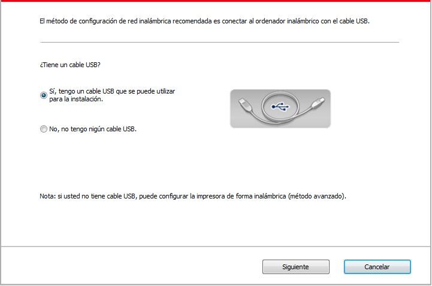
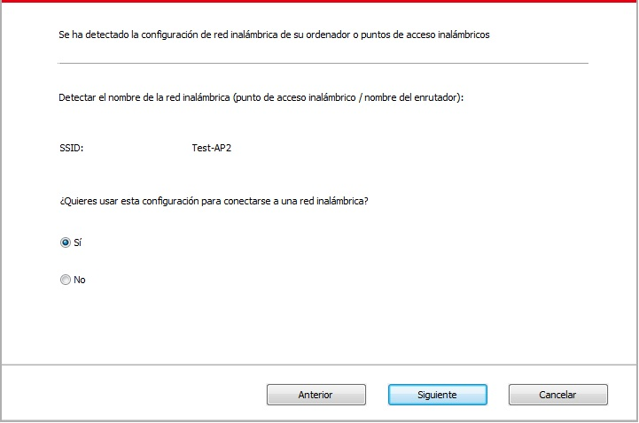
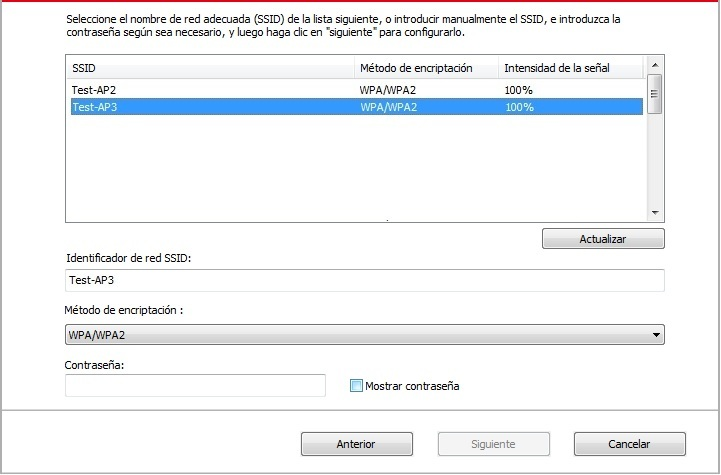
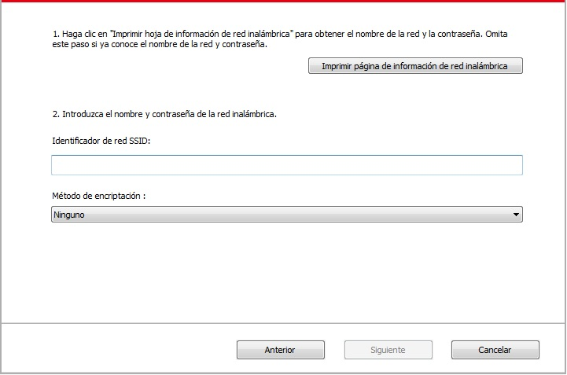
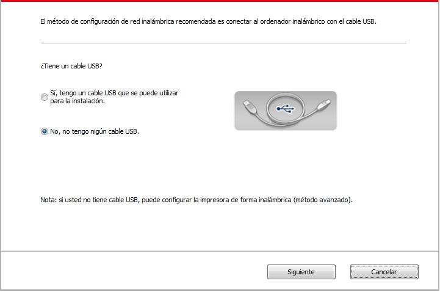
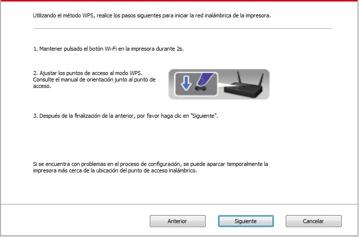
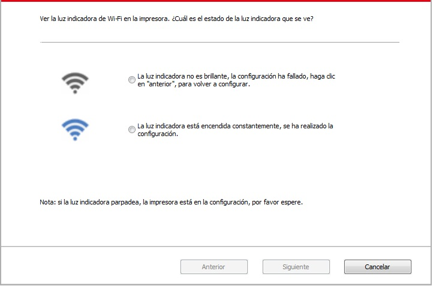

5. Ajustes de red inalámbrica (aplicable a los modelos Wi-Fi )
Según el modelo, el modelo de impresora con función de impresión Wi-Fi admite dos tipos de conexión de red inalámbrica, concretamente, el tipo de conexión de estructura básica y Soft-AP. Generalmente, sólo existirá, al mismo tiempo, una conexión entre el equipo y la impresión. Si tiene algún problema durante el proceso de configuración de la red inalámbrica, consulte el capítulo 5.3 , para obtener información acerca de los problemas comunes en la configuración de la red inalámbrica.
 |
El modo de infraestructura: conectar el router al dispositivo inalámbrico 1. Punto de acceso (enrutador inalámbrico) 2. Impresora de red inalámbrica 3. Un ordenador conectado a un punto de acceso a través de una red inalámbrica 4. Para conectarse al punto de acceso de la red de ordenadores |
|
|
Soft-AP La computadora inalámbrica se conecta directamente al dispositivo inalámbrico. |

5.1.Modelo de estructura básica
Puede conectar el ordenador y la impresora como un medio a través del punto de acceso (enrutador inalámbrico). punto de acceso de conexión (router inalámbrico) se divide en las herramientas de configuración de red inalámbrica y la configuración de la configuración de Wi-Fi Protected Setup (WPS) de dos maneras.
Importante: antes de la instalación de la red inalámbrica, usted debe entender su punto de acceso (enrutador inalámbrico) nombre de red (SSID) y la contraseña, en la configuración de red inalámbrica necesita usar. Si no está seguro, consulte a su administrador de red o punto de acceso (enrutador inalámbrico) fabricante.
5.1.1.Herramienta de configuración de red inalámbrica
Si el equipo se ha instalado y conectado a la red inalámbrica, pero los cambios de red inalámbrica, puede configurar la herramienta de configuración de la red inalámbrica para volver a configurar.
5.1.1.1.Preparaciones
1. Punto de acceso (enrutador inalámbrico).
2. Ordenadores conectados a la red.
3. Impresora con función de red inalámbrica.
5.1.1.2.Método de configuración de la herramienta de configuración de red inalámbrica
1. Active la herramienta de configuración de la red inalámbrica en el ordenador.
1) Sistema de Windows: haga clic en el menú "Inicio" de la computadora - "Todos los programas" - "Pantum" - Nombre del producto - "Herramienta de configuración de red inalámbrica".
2) Sistema de Mac: haga clic en la barra de menús del Finder "Ir" - "Aplicaciones" - "Pantum" - "Utilidades" - "Herramienta de configuración inalámbrica de red".
2. Mediante la configuración de la conexión de línea de conexión USB. En la siguiente interfaz, seleccione "Sí, tengo un cable USB que se puede utilizar para la instalación". Haga clic en "Siguiente".

2.1 Las computadoras están conectadas a una red inalámbrica.
1) La herramienta de configuración de red inalámbrica de forma predeterminada el equipo actual se ha conectado a la red inalámbrica, de acuerdo con las solicitudes de interfaz para completar la configuración.

 |
Nota: |
• El nombre de la red que ha seleccionado (SSID) debe ser coherente con el nombre de red (SSID) del punto de acceso (enrutador inalámbrico) conectado al ordenador. |
2) Hay necesidad de conectarse a otra red inalámbrica por favor compruebe "No" la configuración de la otra red inalámbrica, de acuerdo con las solicitudes de interfaz para completar la configuración.

|
Nota: |
• En la actualidad, hay tres modos de seguridad para el soporte de impresoras: ninguno, WEP y WPA / WPA2. 1) No: no usar ningún método de encriptación. 2) WEP: mediante el uso de WEP (Wired Equivalent cifrado), para enviar y recibir datos clave de seguridad. La clave WEP se aplica a las redes de 64 y 128 bits de cifrado, que pueden contener números y letras. 3) WPA / WPA2: Wi-Fi protegida clave compartida previamente de acceso utilizando TKIP o AES (WPSPersonal) tendrán el dispositivo inalámbrico y el punto de acceso para conectarse. WPA / WPA2 utiliza una clave compartida previamente entre 8-63 caracteres (PSK). • Mostrar la contraseña predeterminada no está activada, si se activa, la contraseña de entrada se mostrará en texto plano. |
2.2 Las computadoras no están conectadas a una red inalámbrica. En la siguiente interfaz, ingrese el nombre de red del punto de acceso (enrutador inalámbrico) SSID (SSID sensible a mayúsculas y minúsculas) y contraseña, de acuerdo con las solicitudes de interfaz para completar la configuración.

|
Nota: |
• Si no conoce el nombre del punto de acceso (SSID), haga clic en el "Imprimir página de información de red inalámbrica" para ver el nombre de red (SSID) del punto de acceso que desee. • Configuración de red inalámbrica es completa, si la impresora no se puede utilizar normalmente, vuelva a instalar el controlador. |
3. Uso de conexión WPS.
En la siguiente interfaz, seleccione " No, no tengo nigún cable USB". Haga clic en "Siguiente".

1) Utilizando el método WPS, realice los pasos siguientes para iniciar la red inalámbrica desde la impresora. (Configuración específica de WPS, consulte el capítulo 5.1.2)

2) De acuerdo con el indicador Wi-Fi sobre el estado de la impresora, para determinar si la impresora conectada al éxito. Si la configuración falla, haga clic en el "Anterior" para volver a configurar; Si se ha configurado correctamente, haga clic en el botón "Listo" para completar la configuración.

|
Nota: |
• Configuración de red inalámbrica es completa, si la impresora no se puede utilizar normalmente, vuelva a instalar el controlador. |
5.1.2.Configuración de Wi-Fi Protected Setup (WPS)
Si el punto de acceso (enrutador inalámbrico) es compatible con Wi-Fi Protected Setup (WPS), puede pulsar el panel de control de la impresora en las teclas Wi-Fi y punto de acceso (enrutador inalámbrico) botón WPS, por lo que la impresora está conectada a una red inalámbrica.
5.1.2.1.Preparaciones
1. Punto de acceso (enrutador inalámbrico) compatible con Wi-Fi Protected Setup (WPS).
2. Impresora con función de red inalámbrica.
5.1.2.2.Método de configuración de Wi-Fi Protected Setup (WPS)
1. Abrir la alimentación de la impresora y punto de acceso (enrutador inalámbrico).
2. Asegúrese de que la impresora está lista.
|
Nota: |
• Si la impresora está en un estado de latencia, presione cualquier botón en el panel de control de la impresora y la impresora se despierta. |
3. Pulse la tecla "Wi-Fi" en el panel de control de la impresora durante más de 2 segundos hasta que el luces azules máquina de impresión de luz intermitente Wi-Fi, y luego suelte.
4. Dentro de los dos minutos, pulse el botón WPS del punto de acceso (enrutador inalámbrico), y luego suelte.
5. El punto de acceso (enrutador inalámbrico) y la impresora comienza a Wi-Fi, luces de la impresora Wi-Fi intermitentes luz azul. Una vez conectada la impresora Wi-Fi luz de color azul claro.
Si hay más de 2 minutos se establece ninguna conexión, la impresora vuelve al estado Ready, Wi-Fi luces apagadas, Wi-Fi Protected Setup (WPS) conexión falla. Si necesita volver a conectarse, repita los pasos 3-4.
|
Nota: |
• Configuración de Wi-Fi Protected Setup (WPS) tras el éxito de la conexión, si desea imprimir a través de la red inalámbrica, por favor instale el controlador. |
5.1.3.Cómo cerrar la red Wi-Fi conectado
Modo de infraestructura de acuerdo con los pasos anteriores se ha completado la conexión de red inalámbrica, el indicador de Wi-Fi en el panel de control en el estado conectado se enciende constantemente, a continuación , pulse y mantenga pulsado el botón 2 segundos anteriormente pueden ser desconectados de la conexión Wi-Fi (el indicador de Wi-Fi se apaga ).
5.2.Modo de punto de acceso Wi-Fi
Usted puede (vía inalámbrica) formar una conexión entre el computador con la función de red inalámbrica y la impresora de la red inalámbrica sin utilizar el punto de acceso.
5.2.1.Preparaciones
1. Impresora con función de punto de acceso Wi-Fi.
2. Computador con función de red inalámbrica.
5.2.2. Conexión a punto de acceso Wi-Fi
Active el punto de acceso Wi-Fi de la impresora antes de conectar el punto de acceso de la misma. Para este propósito, inicie sesión en el servidor Web integrado, haga clic en "Ajustes"-"Ajustes inalámb."-"Punto de acceso inalámb." para establecer el estado básico del punto de acceso como "Activado".
5.2.3.Configuración de Hotspot Wi-Fi
Cuando el hotspot inalámbrico de la impresora esté activo, el usuario podrá conectarse a él buscándolo directamente. El hotspot inalámbrico está habilitado de forma predeterminado y la contraseña predeterminada es "12345678". Puede obtener el SSID y la contraseña específicos de la impresa en la Página de información de configuración Wi-Fi, que puede imprimir seleccionando Imprimir configuración Wi-Fi. Luego de establecer la conexión, podrá completar la configuración siguiendo el método de configuración web.
5.3.Problemas comunes sobre la configuración de la red inalámbrica
1. No se encontró la impresora
• Si la alimentación de computadora, punto de acceso (enrutador inalámbrico) o impresora está conectada.
• Si el ordenador y la impresora están conectados a través de la conexión USB.
• Si mpresora está compatible con la conexión de red inalámbrica.
2.En caso de conexión de red, no puede encontrar el nombre de red (SSID)
• Comprobar si el interruptor de alimentación del punto de acceso (enrutador inalámbrico) se haya encendido.
• La impresora no puede encontrar el nombre de red (SSID) del punto de acceso que desea conectarse. Por favor, compruebe el nombre de red (SSID) del punto de acceso y tratar de volver a conectar.
• Cuando la configuración del punto de acceso (enrutador inalámbrico) se cambia, debe restablecer la red inalámbrica de la impresora.
3.Fracaso de conexión
• Por favor, compruebe el punto de acceso (enrutador inalámbrico) y el modo de seguridad de la impresora, la contraseña es correcta.
• Compruebe la recepción inalámbrica alrededor de la impresora. Si el router está muy lejos de la impresora o en el medio de una barrera, que puede afectar a la recepción de la señal.
• Desconecte la alimentación de punto de acceso (enrutador inalámbrico) y de la impresora, volver a configurar después de reinicio.
4. Si la impresora existe algún problema durante su uso en la red, por favor, compruebe los siguientes aspectos:
• Compruebe si el software de servidor de seguridad bloquea la comunicación. Si el ordenador y la impresora están conectados en la misma red, no es posible buscar, posiblemente debido a que el software de servidor de seguridad bloquea la comunicación. Por favor, consulte la guía del usuario del software servidor de seguridad, cerrar el servidor de seguridad, y luego intentar buscar de nuevo la impresora.
• Compruebe si es correcta la distribución de la dirección IP de la impresora. Puede imprimir la página de información de configuración de red de la impresora para comprobar la dirección IP.
• Por favor, tome como referencia los siguientes pasos para comprobar que la impresora y el Ordenador están en la misma red.
1)Seleccione “Símbolo de sistema” tal y como se muestra a continuación.
a. Sistema operativo Windows 8/10: seleccione el botón “Buscar” en el menú de inicio y teclee “Símbolo de sistema” en el campo de búsqueda, después presione el botón “Intro” en el teclado.
b. Sistema operativo Windows 7/Vista/XP: presione, en este orden, menú de “Inicio”-“Todos los procedimientos”-“Adjuntos”-“Símbolo de sistema”.
2)Introduzca el ping y la IP de su impresora en la ventana emergente, y después presione el botón “Intro”.
Por ejemplo: ping XXX.XXX.XXX.XXX (“XXX.XXX.XXX.XXX” es la dirección IP de la impresora)
3)Si apareciera RTT en la ventana, significa que su Ordenador e impresora están en la misma red.Si no aparece RTT en la ventana, por favor, remítase al capítulo 5 para reconfigurar la red inalámbrica de la impresora.
|
Nota: |
• Para obtener información acerca del punto de acceso (enrutador inalámbrico), consulte el manual del usuario o consultar a su fabricante. |